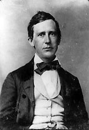

|

|

|
|
|
Songwriter and composer Stephen Collins Foster wrote music that
represented the heartfelt sentiments and folksy way of life
for most 19th century Americans. Enduring classics such as
"Old Susannah" ("I come from Alabama, with my banjo on my
knee") and "Camptown Races" remain beloved tunes to the
present day. Among other distinctions, Foster was the first
"professional" songwriter in the United States. From 1850 to
his death, he lived only from the income he earned off of
the sale of his music. A contemporary critic summed up
Foster's impact in this way: "The air is full of his
melodies. They are our national music."
Foster was born on July 4, 1826 in Lawrenceville,
Pennsylvania, the 10th of 11 children. His father was a
politician and merchant who fell on hard times but managed
to maintain his family's middle class existence. Foster's
parents encouraged their children's love of music with piano
lessons and recitals. Stephen received a good education and
was tutored in music by a teacher in Pittsburgh.
Foster's parents expected their talented son to take a
job in the business world, which he did, at first. Hired as
a bookkeeper, Foster felt out of place in an office. He
quit, and dedicated himself to music. Foster's first
published song, "Open Thy Lattice Love," was in print by the
time he was twenty. In 1850, he had twelve compositions in
print and felt secure enough to marry his sweetheart, Jane
MacDowell, with whom he had a daughter, Marion. His income
was based on 10% royalties of his sheet music sales.
Foster's compositions were not protected by copyright. Thus,
while arrangers and publishers made thousands of dollars
from his music, his own income remained limited, and he and
his family struggled at near poverty levels for much of the
time.
Possessed of a sensitive ear for the cadence of language
and style, Foster began his career in Pittsburgh, where he
lived for most of his short but productive life. Writing
tender, lyrical ballads for parlor singers and pianists,
such as "Jeanie with the Light Brown Hair," Foster studied
the various musical and poetic styles of immigrant
populations. The first songwriter to weave African-American,
German, Irish, Italian, Scottish, and English music into one
style, Foster created a distinctly American type of song.
Soon, Foster's music was wildly popular among the growing
middle class families who had a piano in their newly added
parlor. But his influence was also widely felt in the
musical theater as well, and reached out to large immigrant
and working class audiences. Many of his most well known
songs were composed for minstrel shows where white actors
posed as African-Americans in black face. Foster's songs
for minstrel shows were written in dialect. This genre of
songs exposed white audiences to the slaves' point of view,
to their cruel treatment, and to the fact that
African-Americans were capable of the same feelings as
whites. "My Old Kentucky Home, Good Night" is deeply
evocative of the pain slaves endured. Another famous example
is "Way down upon the Swanee River."
Foster was the first songwriter to refer to an
African-American woman as a "lady" in "Nellie Was a Lady"
(1849). Although the dialect he created for minstrel shows
was vulgar, Foster attempted to provide a more human view of
African Americans to counteract the racism of the time.
With this approach, Foster also made minstrel music more
acceptable to the middle class and to female audiences.
When the approach of the Civil War found Foster bankrupt,
he combined forces with George Cooper to produce two Civil
War songs, "Willie Has Gone to War" and "For the Dear Old
Flag I Die." However, by the age of 37, Foster was
separated from his family, in ill health, penniless and
living alone in New York City. Weakened by fever, he fell
and cut himself on his washbasin, which led to his death on
January 13, 1864.
Source: Joan Waugh, ed., Facts on File Encyclopedia of American
History: Civil War and Reconstruction, 1856 to 1869 (New York: Facts on
File, 2003), 137-138.
|